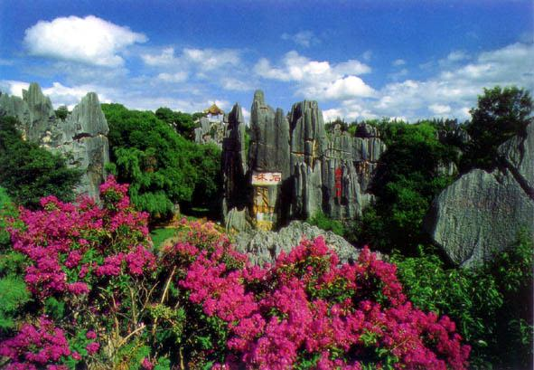

October 16-19, 2003

The conference has two parallel tracks: academic and technical. Only the papers being accepted for presentation at the academic track will be included in the Springer's LNCS 2846.
Best Student Paper Award:
Using Feedback to Improve Masquerade Detection
Kwong Yung
Stanford University, USA
| Committees |
Call for Papers |
| Conference Program |
Other
Information |